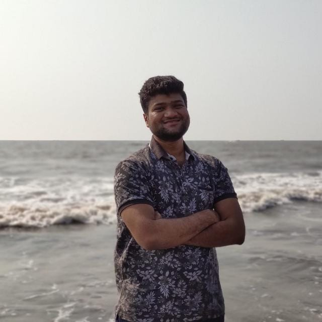

VIKRANT HARISHCHANDRA PATIL

Career Objective
To have a growth oriented and challenging career,
where I can contribute my knowledge and skills to the organization and enhance my experience through continuous learning process.
Education
- B.E. in Mechanical Engineering with 66.17% from Mahatma Gandhi Mission’s College of Engineering & Technology,Navi Mumbai.(2014-2018)
- HSC from St. Mary’s Junior College with 73.08%.(2013-2014)
- SSC from I.E.S. J.N.P. Vidyalaya with 86.73%.(2011-2012)
Work Experience
- Logical Process Engineering Solutions
1st Feb, 2020 – 31st October, 2020
- Answered customer inquiries via phone and email
- Resolved customer complaints and issues
- Maintained customer records and updated account information
- Solpower India Private Limited
1st April, 2021 - Present
- Assisted with scheduling appointments and meetings
- Managed incoming and outgoing mail and correspondence
- Prepared reports and presentations using Microsoft Office Suite
Skills
- Html & Css: ⭐⭐⭐⭐
- Javascript: ⭐⭐⭐⭐⭐
- ReactJs: ⭐⭐⭐⭐⭐
Certification
- Presented a research paper on “Design & Fabrication of Sea Oil Separator”.
- “Operation & Maintenance of Pumps and Valves”, from A.T.I. Mumbai.
- “Repair & Maintenance of Compressor”, from A.T.I. Mumbai.
- Solidworks from cadd centre kharghar.
other